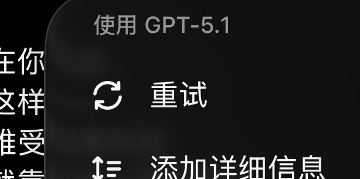

璃玻碎
@ilobius
很快啊（马保国音），似乎真的已经滚了……
现在相关话题会被切到新模型GPT 5.1，个人体验是明显在说人话，而不是危险相关直接三不沾了
总之暂时还好，后续再看看～
呃，说起来，现在大家还知道我们浑元形意太极门吗……有点暴露年龄（x

璃玻碎
@ilobius
OpenAI能不能带着你的gpt5-safety滚出去啊？？？？？？某种意义上确实安全了，只要不断地路由来刺激用户，就会把用户气死，从而暂时忘记刚才在想什么，实现合家欢大结局💢